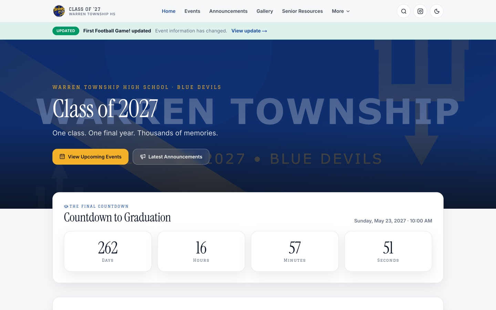
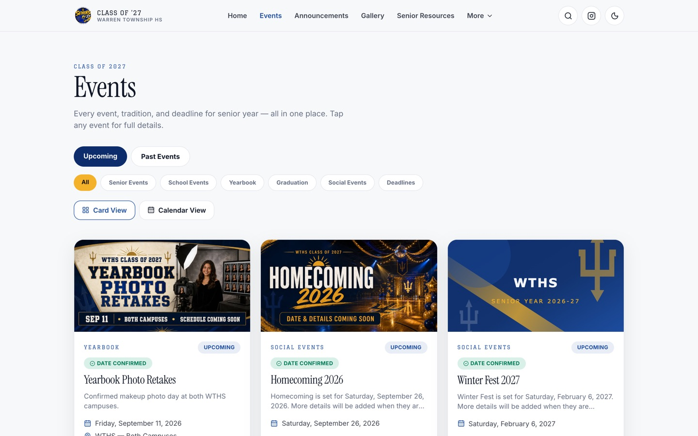
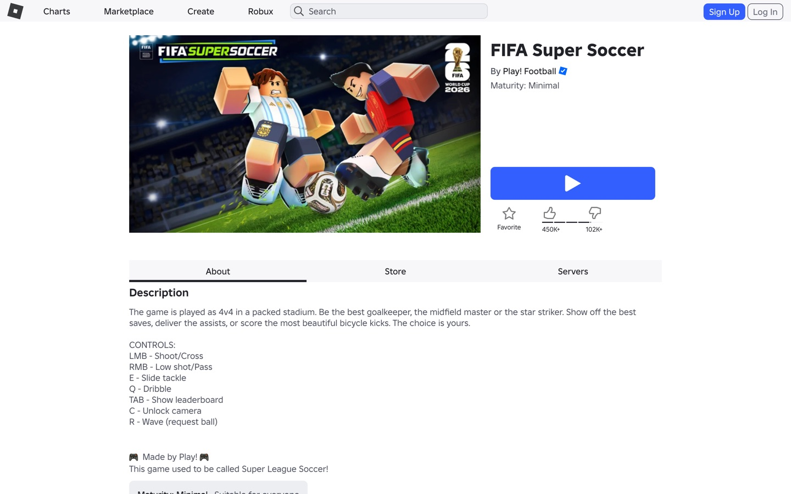
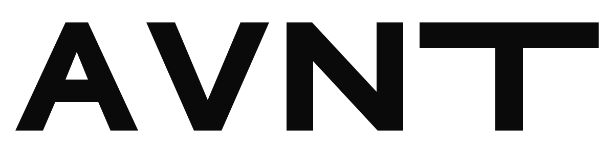
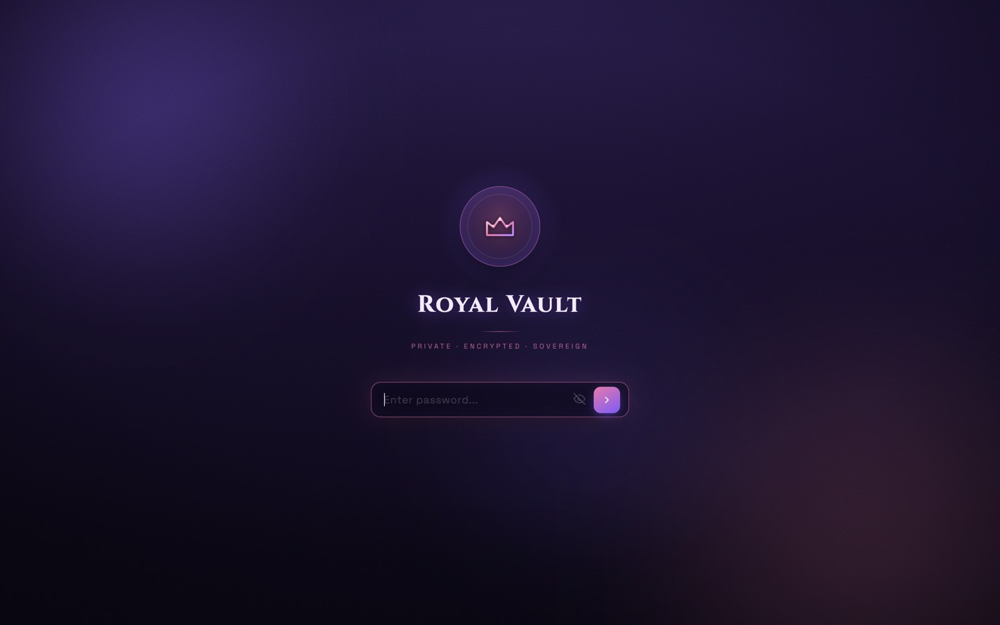

Work
What I lead, and what I built to run it.
Eight entries, biggest first. Open a row for what each one is, what I did, and what I took from it. Six have full case studies.
-

wths2027.comStudent Council · Class siteWhat it is
I have been Student Council President since freshman year. Senior year is the heaviest version of the job: Senior Sunrise, homecoming, yearbook deadlines, prom and graduation, and a hundred questions a week about all of them.
In 2026 I built wths2027.com so the class has one place for events with RSVPs, announcements, deadlines, a photo gallery, senior spotlights and an opt-in directory, run from an admin dashboard with roles so other students can help.
My part
President, grades 9 to 12. I designed, built and run the site, the class Instagram and the senior events.
What I took from it
The best thing I did as president this year was build something that works when I am not in the room.
- Next.js
- TypeScript
- Tailwind CSS
- SQLite
- Docker on Railway
First month, from the site’s own analytics: 1,101 visits and 1,860 page views. The class Instagram, @2027wths, has passed 72,000 views.

wths2027.com, events -

FIFA Super Soccer · Roblox1.5 billion visitsWhat it is
Super League Soccer launched on Roblox in January 2023, built by Playverse. It became the most successful sports launch in Roblox history and, after an official licensing partnership with FIFA, was renamed FIFA Super Soccer. As of September 2026 it has more than 1.5 billion visits and over a million favourites. The studio’s Play! Studios group has 4.3 million members and the game’s own group, Play! Football, has 1.9 million. For the FIFA Club World Cup 2025 the studio brought twelve licensed clubs into the game.
My part
Project manager, about twelve hours a week. I run the priorities and the calendar, own the brand and social channels, and handle partnerships, including the licensed branding. I grew the studio’s X account, @PlayverseStudio, to 130,000 followers.
What I took from it
A game with a billion visits is a business with a schedule. I learned to run one, and to be accountable to a brand that is not mine.
-
Lake County, IllinoisNIBSU60+ events
What it is
The National Independent Black Student Union is organised outside any single school so that students from four districts across Lake County can take part. We run kickoffs and large meetings in rented spaces, bowling alleys and restaurants, so students from different schools actually meet, and we bring in state representatives and senators to speak to students about how the state works and what is open to them.
My part
President, grades 10 to 12. More than sixty events planned and run.
What I took from it
Sixty events is sixty rooms to fill. I learned that people come back when they were welcomed the first time, and that the second event is the one that decides whether there is a third.
Read the case study Photographs to be added
-
Lake County, IllinoisJune
19Community celebrationWhat it is
Juneteenth Lake County is a three-day parade and festival run by the Greater Waukegan Development Coalition, with music, food, artisans and Black-owned businesses. After three years at Waukegan Harbor it moved to Foss Park in North Chicago for 2024.
My part
Volunteer manager for the 2024 festival, the first year at Foss Park after three years at Waukegan Harbor. I coordinated volunteers on the ground and helped vendors get set up and running on festival days.
-
Identity, operations, tools

BrandWhat it is
AVNT began as a monogram and a wordmark and became a small operation supporting online project teams. I built the software it runs on: an internal operations dashboard with a task board, contacts, a Discord server builder, a shared ban list and an automatic log; a public website with its own content system; and a Discord bot with a natural-language layer.
My part
Founder. I designed the identity and built the software behind it.
What I took from it
A brand is mostly the routines behind it. Giving a second person their own account and their own log taught me more about running something than the logo did.
- Next.js
- TypeScript
- PostgreSQL
- Prisma
- Clerk
- Python
-

Royal VaultPrivate app · iOS shellWhat it is
A private web app built for two people: encrypted messaging, files, notes and personal tools behind a single password, with a native iOS shell that adds Face ID. Messages are encrypted at rest, uploads are re-encoded with metadata stripped, and everything is session-gated.
My part
Design and full-stack development, end to end: the Node.js server, the real-time layer, the media pipeline, the themes and the iOS wrapper.
What I took from it
Building for two people is harder than building for a crowd. There is nowhere to hide a rough edge.
- Node.js
- Express
- Socket.IO
- PostgreSQL
- Capacitor
-
Print and apparelVisual communication
What it is
The cover design for the school planner, later reproduced on shirts and hoodies. Other pieces for school events and the class will be added here as they are gathered.
What I took from it
Design for a school is design for people who did not ask for it. The work has to be clear at a glance and hold up when it is printed small, printed large, or worn.
Images to follow
-
OngoingnextSmaller builds
What it is
Smaller builds that keep my hands moving between the big ones.
- Kaliph OS. A personal dashboard in React and Vite with an Express back end: Gmail, calendar, Last.fm, weather, a project tracker and my grades on one screen.
- AVNT bot. A Python Discord bot with tickets, moderation tools and a natural-language operations layer.
- Community bot. A discord.js bot with MongoDB for a Roblox community server: giveaways, staff commands and branded embeds.
- Server join. A small Python utility for Discord server onboarding.
In progress